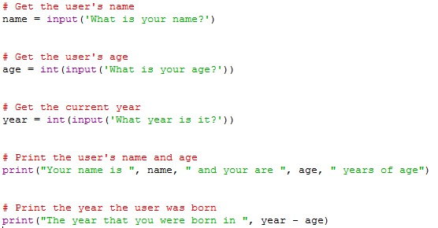
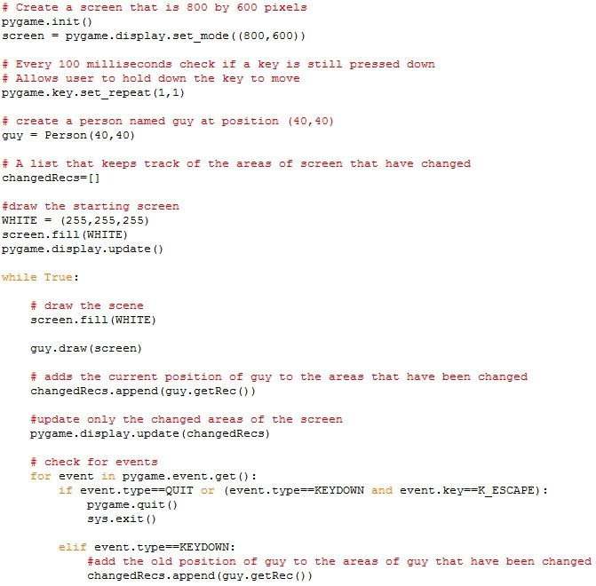
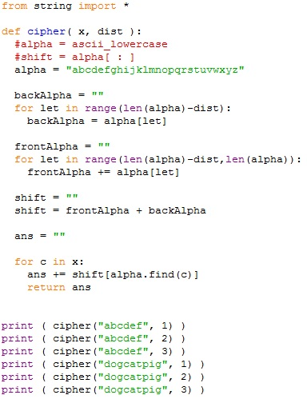
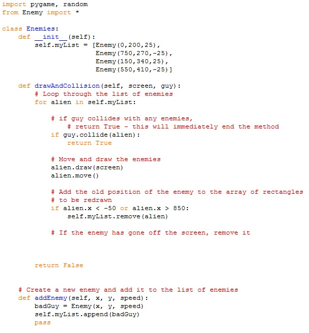

Python Content
Unit 1 (Basics)
Variables Lab
Description
In the first introduction lab of python we learn basic user interface syntax. This includes the defining of a variable by typing only its name, no data value type is required. We also used the print command which is print("message"). In order to get \ input from the user when a certain message in promted, we used the command input("message"). We set out variables to these user inputs and since we want the variables to be the integer type we inclosed our input statement with the int() statement to change the String value to integer.
Math Tricks Lab
Description
In this lab we learned the basic python syntax for math. This syntax includes the opperations "+" addition, "-" subtraction, "*" multiplication, "/" division, "%" modulus opperator (to get a remainder) and "=", ">=", "!=" for testing boolean values. In order to simplify opperations with variables, one can write, for example, var *= 2 instead of writing var = var * 2.
Moving Lab
Description
Here, we created a class which makes an object (here a person) and as it is called in the runner program, is feed data to help create the object (here it is fed the coordinate "x" and "y" values). In the class, the object is also assigned methods which can be called for an object that has been created. In this case the methods are directional movements which move the person one pixel when an arrow key is pressed. The "pygame" is also introduced which is what runs the program. It is helpful for generating the window, and facilitating the user commands and calling one of the "draw" methods to move the person once the user has pressed a key.
Concepts Learned
- The basic syntax to print which is print("message") and ask for input from the user which is input("message").
- The basic math syntax for addition, subtraction, multiplication, division, using the modulus operator.
- The class is introduced which creates objects with specific and unique values.
- Methods are also introduced to work in tandem with the classes and to accomplish individal functions such as when they are fed a value, perform a function and then return another value.
Unit 2 ("if" statements)
Don't Walk Off Lab
This lab introduces the "if" statement which is used to checck a certain boolean value and depending on if it is true, will execute code which is contained within its brakets. In this specific lab, "if" statements were used to check the x and y position of the person on the pygame screen, and using the "greater than" or "less than" logic statements tests to set if the person is at the edge of the screen or not along with knowing the total size of screen. At the end of the lab the user could move the person anywhere on the screen but at the edge, the person stoed and could only move in the other diresctions.
Collide Lab
Description
In this lab, we have a block which the person which the person moving can not go through. To do this we used the getRec() method which generates an imaginary rectange around the person and with other methods, determines if one of the sides of the rectange is at the coordinates of the sides of the block which is not supposed to be intersected. The size and the position of the rectange is dependent and changes acourding to where the person is. If the person (measured with rectangles) and the block intersect, according to the "if" statements, the person can only move in the other directions.
Running Man Lab
Description
In this lab, there is a person can jump, but the number of jumps must be limeted or else the user my make the person jump enough to "float". We stop this by using a counter embeded in the moveUp() method (which is used to make the person jump) so that every time the person attempts to jump the counter goes up by one. When the counter is at a certain level, an "if" statement bypasses the code to jump so the person effectivly does not jump and falls back down. We also use an else-if statement to decrease the hopper once the limit is reached.
Concepts Learned
- The "if" statement is introduced which executes a certain code if a boolean condition is met.
- Boolean conditions in "if" statements can be analysed with "greater than", "lesser than" and "equal to" conditions.
- The else-if statement is an add-on to another "if" statement which is usually realted with the boolean testing being the same but with different parameters.
Unit 3 (Loops)
Timer Lab
Description
This lab uses a "for" loop to "loop" for a certain amount of time defined by the user. The user is asked how many seconds they would like on the timer. This variable is used in "for" loop to define a "range" with the range method such as "for i in range(var):" where "i" i the variable used in the count down because it decreases every time the loop goes around and is defined by the var used in the range() method. The pygame code of "pygame.time.wait(1000)" is used to "wait" a second. The valuse given inside the method is the time to wait in milliseconds.
Ceasar Cypher Lab
Description
This lab uses the "for" loop again to lop through an input String and convert it into a code using the ceasar cypher which shifts all the letters of an input back a certain amount. In order to do this, the range of the for loops must be the same as the length of the word that is inputed to be encrypted. To find the length of a String we used the "len()" method. We use one for loops to determine the letter which is shifted. Then we use another for loop to complile all the shifted letters into one word which is then returned and printed. To call the method use cipher("word to be encrypted", by how many spaces are the letters shifted).
Squares and Circles
Description
This lab uses for loops draw shapes of different sizes in pygame. To draw rectangles, the rect() method and to draw circls, the circle() method is used of pygame. Depending of variable in the for loop which is defined by the range, the size and position of the rectange and circle change.
Squares and Circles
Description
Here, we must create a screen by using nested for loops to create a grid of the same image. The nested for loops have intervals which are equal to the size of the 50x50 tiles and the for loops stop at the edge of the screen. After this, 30 rock are supposed to be randomly generated at different possitions on the pygame screen. This is done using the Random() method to create random integers with a range that of the screen. There are two random numbers generated, one for the x and one for the y coordinate.
Concepts Learned
- The "for" loop is introduced which only runs a specific number of times defined by the range() method.
- The variable in the for loop can be used within the for loop to accomplish tasks which require the decending value pattern.
- Special methods such as "len()" for determinig the length of a value. And the "Random()" method for determining random integers.
- Nested for loops for repeating a visual like a table.
Unit 4 (Lists)
Costume Change Lab
Description
This lab introduces the list which is good for storing multiple values. In this situation, the list is used for storing the costumes for the animated person. There are four costumes for each direction of travel. The move methods change a variable when a movement occurs and the draw method, depending on what the variable is set to, will switch between the costumes. Different items of the list can be accessed with typing the name of the list and then in square brakets, the item number of the list. Remember that the first item of the list is always identified as the zeroith item. So in order to call it: "list[0]".
Changing Ground Lab
Description
In this lab, the screen is supposed to be draw with different types of tiles. To store the tiles a list is used for the four different .gifs which are used. A nested for loop (seen in unit 3) draws the tiles of each row. Depending on the y value that the for loop is now managing, a different .gif is used for the tile. The pattern of style of tile alternates down the screen so the for loop must take this into account. The for loop also must not go over the border of the pygame screen. The lists in this situation are very useful because they are called several alternating times.
dodging Enemies Lab
Description
In this lab, we are supposed to finish the game where there person must dodge randomly genereated enemies in order to get to the other side of the road. Sice there will be a total of four enemies which are called randomly and move at randomly, we must create a list to store them in so we can call for individuals in the main program. We use the getRec() method again to see if the peron has collided with an enemy or not. These staements are aslo stored in a list for organizational purposes. The drawAndCollision() method determines if there has been a collision by returning a True value. The getRec() method in tandem with the list of enemies yeilds the tuple values (x, y, width, height). The addEnemy() method at the end of the Enemies class creates enemies with a specific (x, y, speed) values. And the numEnemies() method keeps track and regulates the number of enemies on the screen.
Concepts Learned
- The list was introduced to organize code by storing it.
- Values stored in aa list can be called by writing the name of the list and list item you want to get.
- Lists used with nested for loops to generate a two dimensional grid of tiles.
- Lists to switch between costumes depending on the integer value of a variable.